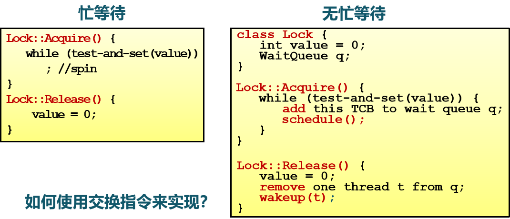

本文介绍同步与互斥，主要包括相关背景，竞态条件、原子操作、临界区 & 互斥 & 死锁 & 饥饿等相关概念，临界区的属性以及如何实现临界区的互斥访问等。
背景
第一章到第八章内容，到目前为止：
- 多道程序设计：现代操作系统的重要特性。
- 并行很有用（为什么？）提示——多个并发实体：CPU、I/O、用户等。
- 进程 & 线程：操作系统抽象出来用于支持多道程序设计。
- CPU 调度：实现多道程序设计的机制。
- 调度算法：选择进程 & 线程不同的策略。
独立线程：
- 不和其它线程共享资源或状态；
- 确定性：输入状态决定结果；
- 可重现：能够重现起始条件、I/O；
- 调度顺序不重要。
合作线程：
- 在多个线程中共享状态；
- 不确定性；
- 不可重现；
不确定性和不可重现意味着 BUG 可能是间歇性发生的。
虽然如此，但进程 & 线程、计算机、设备需要合作。
合作的优点：
- 共享资源：
- 一台电脑，多个用户；
- 一个银行存款余额，多台 ATM 机；
- 嵌入式系统（机器人控制：手臂和手的协调）。
- 加速：
- I/O 操作和计算可以重叠；
- 多处理器：将程序分成多个部分并行执行。
- 模块化：
- 将大程序分解成小程序——以编译为例，gcc 会调用 cpp, cc1, cc2, as, ld；
- 使系统易于扩展。
程序调用 fork() 创建新进程的过程：
- 操作系统需要分配新的进程 ID，并保证其唯一性。
- 在内核中，
fork()系统调用会运行new_pid = next_pid++：LOAD next_pid Reg1STORE Reg1 new_pid——> 假设发生了上下文切换，转去执行另一个程序的fork()操作INC Reg1STORE Reg1 next_pid
- 假设有两个进程并发执行该过程：
- 正常情况下，如果
next_pid的值为100，那么其中一个进程将获得new_pid=100的新进程 ID，另一个进程将获得new_pid=101的新进程 ID，同时next_pid的值将增加到102。 - 但是，由于可能在自增操作之前发生了上下文切换 ，最终导致两个进程都获得了
new_pid=100的新进程 ID，而next_pid的值也变成了101。
- 正常情况下，如果
多线程程序具有不确定性和不可重现的特点，但 无论多个线程的指令序列怎么交替执行，程序都必须正常工作。
因此，我们必须要有一些新的机制来保证能够 达到最终确定的结果，后面会引入同步互斥机制来解决这种不确定性的问题。
一些概念
竞态条件（Race Condition）
竞态条件是指在多个线程或进程并发执行的情况下，对共享资源的访问顺序不确定，从而导致程序的行为出现不可预测的结果。
- 系统缺陷：结果依赖于并发执行（或者时间）的顺序、时间。
- 不确定性
- 不可重现
- 怎么样避免竞态？
原子操作（Atomic Operator）
原子操作是指在并发环境下，不能被中断的一系列操作，要么全部执行成功，要么全部不执行。原子操作能够保证在多线程或多进程同时访问共享资源时的数据一致性。
原子操作的特点包括：
- 不可中断性：原子操作在执行期间不能被其他线程或进程中断，保证了操作的完整性。
- 互斥性：原子操作在同一时间只能被一个线程或进程执行，避免了竞态条件的发生。
- 原子性：原子操作要么全部执行成功，要么全部不执行，不会出现部分执行的情况。
原子操作通常是由硬件提供的特殊指令或者操作系统提供的原子操作函数来实现的。
实际上的操作往往不是原子的：
- 有些看上去是原子操作，实际上不是；
- 连
i++这样的简单语句，实际上是由三条指令构成的。
临界区 & 互斥 & 死锁 & 饥饿
临界区（Critical Section）是指进程中的一段需要访问共享资源，并且当另一个进程处于相应代码区域时便不会被执行的代码区域。
互斥（Mutual Exclusion）是指当一个进程处于临界区并访问共享资源时，没有其他进程会处于临界区并访问任何相同的共享资源。
死锁（Dead Lock）是指两个或以上进程，在相互等待完成特定任务，而最终没法将自身任务进行下去，形成循环等待。
饥饿（Starvation）是指一个可执行的进程，被调度器持续忽略，以至于虽然处于可执行状态却不能被执行。
临界区（Critical Section）
临界区的属性
要设计实现临界区，临界区必须满足以下属性：
- 互斥：同一时间临界区中最多存在一个线程。
- 前进（Progress）：如果一个线程想要进入临界区，那么它最终会成功。
- 有限等待：如果一个线程
thread处于入口区，那么在thread的请求被接受前，其它线程进入临界区的时间是有限制的（否则线程thread可能会饥饿）。 - 无忙等待（可选）：如果一个进程在等待进入临界区，那么在它可以进入之前会被挂起。
临界区的实现方法
实现临界区的互斥访问的方法：
- 禁用硬件中断；
- 基于软件方法；
- 更高级的抽象方法。
禁用硬件中断（方法一）
中断是指在程序执行过程中，由硬件或软件触发的一种特殊事件，它会打断当前正在执行的程序，并跳转到预定义的中断处理程序中执行。
上面说，中断会打断当前正在执行的程序，也正是因为这个中断，才导致了进程 / 线程的上下文切换——执行其它进程 / 线程。如果没有这个中断，是不是就可以让一个进程 / 线程顺利地执行完临界区代码呢？是的！
方法
禁用硬件中断，实现临界区的互斥访问：
- 没有中断机制，也就没有上下文切换，因此没有并发。
- 硬件将中断处理 延迟到 中断被启用之后。
- 大多数现代计算机体系结构都提供指令来完成这一操作。
- 进入临界区：禁用中断。
- 离开临界区：启用中断。
特点
禁用硬件中断确实可以解决多个进程 / 线程同时访问临界区共享资源，但它有一些缺点：
- 一旦中断被禁用，线程就无法被停止：
- 整个系统都会为你停下来！
- 可能导致其它线程处于饥饿状态！
- 要是临界区可以任意长，会怎么样？
- 将无法限制响应中断所需的时间（可能存在硬件影响，如如无法及时响应网卡中断、输入设备中断）。
- 要小心使用：
- 适用于临界区很小的情况。
- 在多 CPU 的情况下，禁用硬件中断无法解决互斥问题：
- 每个 CPU 都有自己的中断控制器，禁用一个 CPU 的中断不会影响在其它 CPU 上的进程 / 线程产生中断，因此无法实现对临界区的互斥控制。
基于软件的解决方案（方法二）
对于两个线程 的临界区的互斥访问：
1 | /* T_i 的通常结构 */ |
单标志法（失败）
使用一个共享变量 turn：
1 | /* 声明并初始化共享变量 */ |
代码分析：
- 该代码尝试实现 两个 线程对临界区的互斥访问；
- 该代码中
turn的值只能是0/1——线程 会在执行完临界区代码后，将turn设置为1/0； - 如果
turn的值不是自己（while (turn != i)），则会一直忙等待，等待另一个线程将turn值设置为它的对方（turn=j）。
存在的问题（是否满足临界区属性）：
- 满足互斥访问，但有时不满足前进（满足「忙则等待」，但不满足「空闲则入」）：如果线程 在访问了一次临界区后（此时
turn=1），下次能访问临界区的只能是线程 ，如果 一直不访问临界区（不去设置turn=0），那么 便无法再次访问临界区。
因此，该设计满足互斥访问，但 只能在两个进程交替的访问临界区 的情况下满足前进。
双标志先检查（失败）
使用一个共享数组变量 flag[2]，先检查是否可以进入临界区：
1 | /* 声明并初始化共享变量 */ |
代码分析：
- 该代码尝试实现 两个 线程对临界区的互斥访问；
- 该代码中
flag[]数组的每个位置值只能是0/1——线程 会在执行临界区代码前（后），将flag[i]的标志设置为1（0）； - 进入临界区前，如果对方的标志是真，则会一直忙等待，等待另一个线程将它的标志设置为假。
存在的问题（是否满足临界区属性）：
- 不满足互斥访问（不满足「忙则等待」）：初始化时，两个线程的
flag都被置为0；然后向下执行while，都会发现对方的flag不为1，则会进入临界区，无法实现对临界区的互斥访问。
双标志后检查（失败）
使用一个共享数组变量 flag[2]，先置位标志，后检查是否可以进入临界区：
1 | /* 声明并初始化共享变量 */ |
代码分析：
- 该代码尝试实现 两个 线程对临界区的互斥访问；
- 该代码中
flag[]数组的每个位置值只能是0/1——线程 会在 enter section 前将flag[i]的标志设置为1、在执行完 critical section 代码后，将flag[i]的标志设置为0； - 先置位标志，后尝试进入临界区：如果对方的标志是真，则会一直忙等待，等待另一个线程将它的标志设置为假。
存在的问题（是否满足临界区属性）：
- 满足互斥访问，但存在死锁 （满足「忙则等待」，但不满足「空闲则入」）：初始化时，两个线程的
flag都被置为0，并向下执行。当线程 将其flag[0]设置为1后，发生了上下文切换；然后，线程 也会将其flag[1]设置为1；至此，不管哪个线程执行 enter section 代码，都会等待，从而发生死锁。
Peterson 算法（成功）
算法思想：在双标志后检查法中，两个进程都争着想进入临界区，但是谁也不让谁，最后谁都无法进入临界区。而 Peterson 算法，在双方都争着想进入临界区时，让进程尝试“孔融让梨”，主动让对方先使用临界区。
Peterson 算法是满足进程 和 之间互斥的经典的基于软件的解决方法（1981 年）。
它使用两个共享数据项（Use two shared data items）：
int turn指示该谁进入临界区bool flag[]指示进程是否准备好进入临界区
1 | /* 声明并初始化共享变量 */ |
代码分析：
- 该代码尝试实现 两个 线程对临界区的互斥访问；
- 如果自己想进入临界区，便将标志置为真
flag[i] = true、并谦让着让对方先进入turn=j，然后自己做好忙等待的心理准备——但是会检查两个共享数据项，如果对方想进入临界区（flag[j] == true），这时自己便忙等待；否则，自己可以成功进入临界区。
可以证明（用反证法），Peterson 算法能够满足互斥、前进、有限等待三种特性。
Dekker 算法（成功）
Dekker 算法是第一个针对双线程的基于软件的解决方法（1965 年）。
1 | /* 声明并初始化共享变量 */ |
代码分析：
- 该代码尝试实现 两个 线程对临界区的互斥访问；
flag为真，表示想进入临界区（只是想，不代表能进入）；turn为自己，表示自己可以进入临界区（对方不可以）；- 假设只有
flag[]共享变量：那就像「双标志后检查」一样，会发生死锁；turn的使用，解决了死锁的问题。
可以证明，Dekker 算法能够满足互斥、前进、有限等待三种特性。
Eisenberg and McGuire 算法（N 进程）
有机会再补充。
Bakery 算法（N 进程）
解决 N 个进程的临界区互斥访问：
- 进入临界区之前，进程接收一个数字，得到的数字最小的进入临界区；
- 如果进程 和 收到相同的数字，那么如果 ，则 先进入临界区，否则 先进入临界区；
- 编号方案总是按照枚举的增加顺序生成数字。
总结
这些算法有以下特点：
- 复杂：需要两个进程的共享数据项；
- 需要忙等待：浪费 CPU 时间；
- 没有硬件保证的情况下，无真正的软件解决方案。
- Peterson 算法需要原子的
LOAD和STORE指令。
- Peterson 算法需要原子的
更高级的抽象（方法三）
一些解决方案
硬件提供一些原语：
- 像中断禁用、原子操作指令等（大多数现代体系结构都这样）。
操作系统提供更高级的编程抽象来简化并行编程：
- 例如，锁、信号量；
- 从硬件原语中构建。
锁是一个抽象数据结构，用于控制并发访问共享资源的机制：
- 它具有一个二进制状态：锁定（locked）和解锁（unlocked）；
- 两种方法：
Lock::Acquire()：锁被释放前一直等待，然后得到锁；Lock::Release()：锁释放，唤醒任何等待的进程。
使用锁来编写临界区：
1 | lock_next_pid->Acquire(); |
前面（背景小节）的例子变得简单起来，lock_next_pid->Acquire() 加锁后，临界区中的代码 next_pid++，在同一时间（从读、执行加一再到写回内存），只有一个进程对其操作，确保对 next_pid 的操作是原子的。
大多数现代体系结构都提供特殊的原子操作指令：
- 通过特殊的内存访问电路；
- 针对单处理器和多处理器。
Test-And-Set 指令
测试和置位（Test-And-Set, TAS）指令 把给定的内存地址设置为 1，然后返回之前的旧值：
1 | bool TestAndSet(bool *target) { |
还有一个 Compare And Swap (CAS) 指令。
Exchange 指令
1 | void Exchange(bool *bool *b) { |
Test-And-Set 和 Exchange 在硬件上实现为一个原子操作，执行期间不会被其他处理器打断。
基于 TAS 指令实现自旋锁（spinlock）
1 | class Lock { |
Lock::Acquire() 代码分析：
- 如果锁被释放，那么 TAS 指令读取 0 并将值设置为 1（即锁被设置为忙，并且需要等待完成）；
- 如果锁处于忙等待，那么 TAS 指令读取 1 并将值设置为 1（即不改变锁的状态，并且需要循环 TAS 指令）。
上面方法，线程在等待的时候是忙等待，消耗 CPU 时间，自旋锁采用这种设计（因为它适用于持有锁的时间很短的情况下）。
无忙等待锁
无忙等待锁，使处于忙等的进程睡眠，在临界区执行完的进程会将睡眠的进程唤醒。
如果临界区执行时间短，选择忙等方式（如自旋锁）；如果临界区执行时间长，选择无忙等待方式（如互斥锁、信号量、条件变量）。
基于 Exchange 指令实现自旋锁（spinlock）
1 | /* 声明并初始化共享变量 */ |
代码分析：
- 当
key==1, lock==1时，交换两数后，不会影响两数的值，即无法退出循环、无法获取锁； - 当
key==1, lock==0时，交换两数后，有key==0, lock==1，即立即获取锁、退出循环。
原子操作的特征
优点：
- 适用于单处理器或者共享主存的多处理器中 任意数量的进程同步；
- 简单并且容易证明；
- 支持多临界区。
缺点：
- 忙等待消耗处理器时间；
- 可能导致饥饿（如进程离开临界区时，有多个等待进程的情况）；
- 死锁：拥有临界区的低优先级进程，遇到上下文中断，高优先级进程获得处理器，并请求访问临界区，这时会忙等待，高优先级进程向进入临界区，低优先级进程由于无法占用处理器，导致无法退出临界区（解决方案：优先级反转）。
总结
锁是更高等级的编程抽象：
- 互斥可以使用锁来实现
- 通常需要一定等级的硬件支持（比如原子操作指令）
常用的三种实现方法：
- 禁用中断（仅限于单处理器）
- 软件方法（复杂）
- 原子操作指令（单处理器或多处理器均可）
可选的实现内容:
- 有忙等待
- 无忙等待
参考资料：
1：https://github.com/OXygenMoon/OperatingSystemInDepth
2：https://blog.csdn.net/weixin_53407527/article/details/125088864